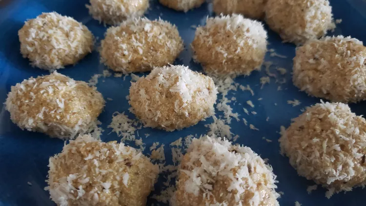

Easy Coconut Ladoo

Description
Coconut, cardamom, and condensed milk star in this super quick and easy Indian dessert that's great for gifting.
Prep Time: 15 mins
Cook Time: 15 mins
Additional Time: 10 mins
Total Time: 40 mins
Servings: 10
Yield: 10 ladoos
Ingredients
- 2 cups flaked coconut
- 1 (14 ounce) can sweetened condensed milk
- 2 pinches ground cardamom
- 2 drops vanilla extract
- 2 tablespoons semolina flour (Optional)
- ½ cup flaked coconut, or more as needed
Directions
- Place 2 cups coconut into a pan and heat over low heat until lightly toasted, making sure not to burn or change color, 2 to 3 minutes. Remove from heat.
- Bring a pot of water to a boil over high heat. Place unopened can of condensed milk into the middle of the pot; boil for 3 to 4 minutes. Remove using tongs; let cool slightly, about 5 minutes. Pour into coconut and add cardamom and vanilla extract. Mix well. Let cool enough to handle, about 5 minutes.
- Form mixture into small balls using oiled hands, as mixture will be very sticky, adding semolina as needed if very wet and runny.
- Place remaining coconut into a shallow bowl or on a plate. Roll ladoos in coconut and serve.